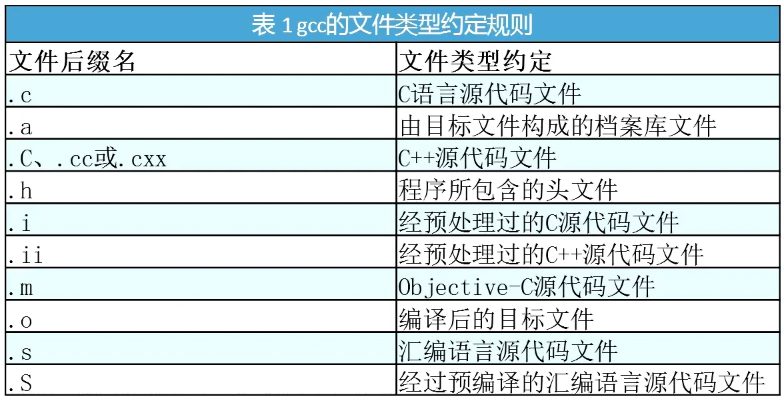
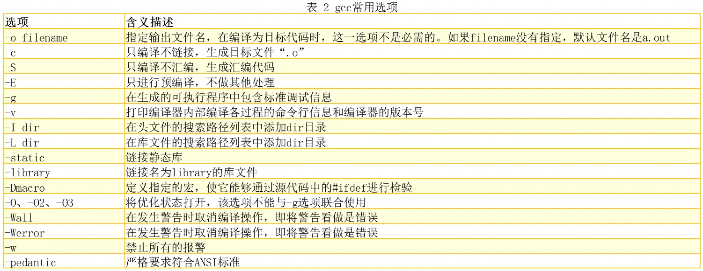

gcc
gdb


调试的对象：可执行程序
编译时需要增加调试信息-g
命令标识
含义
l显示代码
Enter（回车键）重复上一条命令
b 行号为某行添加断点
info break
查看断点信息(bnum)
delete bnum
删除断点对应的编号
r、run启动程序
n、next单步执行
p 变量名、print 变量名打印变量名内容
q退出调试
s、step进入函数
f、finish跳出函数
continue继续程序（到下一个断点）
目标：让新服务器上的gcc/g++命令默认指向GCC 15，且不破坏系统原默认版本。
/opt/GCC/v15，指向具体版本
1 ls -l /opt/GCC/v15/bin || find /opt/GCC -maxdepth 3 -name 'gcc-15' -o -name 'g++-15'
输出：
1 2 3 4 5 6 7 8 9 10 11 12 13 14 15 16 17 18 19 20 cxing@forrest:~$ ls -l /opt/GCC/v15/bin || find /opt/GCC -maxdepth 3 -name 'gcc-15' -o -name 'g++-15' total 480156 -rwxr-xr-x 4 root root 12542192 8月 9 17:15 c++-15 -rwxr-xr-x 1 root root 12537688 8月 9 17:15 cpp-15 -rwxr-xr-x 4 root root 12542192 8月 9 17:15 g++-15 -rwxr-xr-x 3 root root 12535504 8月 9 17:15 gcc-15 -rwxr-xr-x 2 root root 156184 8月 9 17:15 gcc-ar-15 -rwxr-xr-x 2 root root 151976 8月 9 17:15 gcc-nm-15 -rwxr-xr-x 2 root root 151984 8月 9 17:15 gcc-ranlib-15 -rwxr-xr-x 1 root root 11483480 8月 9 17:15 gcov-15 -rwxr-xr-x 1 root root 9305832 8月 9 17:15 gcov-dump-15 -rwxr-xr-x 1 root root 9477192 8月 9 17:15 gcov-tool-15 -rwxr-xr-x 1 root root 360127440 8月 9 17:15 lto-dump-15 -rwxr-xr-x 4 root root 12542192 8月 9 17:15 x86_64-linux-gnu-c++-15 -rwxr-xr-x 4 root root 12542192 8月 9 17:15 x86_64-linux-gnu-g++-15 -rwxr-xr-x 3 root root 12535504 8月 9 17:15 x86_64-linux-gnu-gcc-15 -rwxr-xr-x 2 root root 156184 8月 9 17:15 x86_64-linux-gnu-gcc-ar-15 -rwxr-xr-x 2 root root 151976 8月 9 17:15 x86_64-linux-gnu-gcc-nm-15 -rwxr-xr-x 2 root root 151984 8月 9 17:15 x86_64-linux-gnu-gcc-ranlib-15 -rwxr-xr-x 3 root root 12535504 8月 9 17:15 x86_64-linux-gnu-gcc-tmp
1 2 3 mkdir -p ~/binln -sf /opt/GCC/v15/bin/gcc-15 ~/bin/gccln -sf /opt/GCC/v15/bin/g++-15 ~/bin/g++
~/bin 在 PATH 最前（加到 ~/.bashrc 末尾，首次配置只需一次）
1 2 3 4 5 6 7 if [ -d "$HOME /bin" ]; then case ":$PATH :" in *":$HOME /bin:" *) ;; *) PATH="$HOME /bin:$PATH " ;; esac fi
之后刷新并验证
1 2 3 source ~/.bashrc && hash -rwhich gcc && gcc --version | head -n1which g++ && g++ --version | head -n1
使用 update-alternatives 统一默认：
1 2 3 4 sudo update-alternatives --install /usr/bin/gcc gcc /opt/GCC/v15.2.0/bin/gcc-15 150 \ --slave /usr/bin/g++ g++ /opt/GCC/v15.2.0/bin/g++-15 sudo update-alternatives --config gcc gcc --version
注意：系统级修改会影响所有用户与任务，需谨慎。